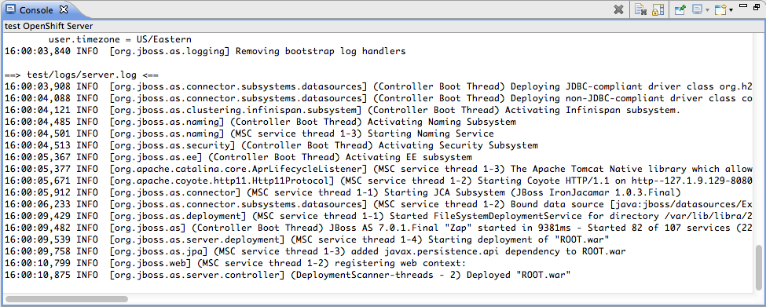

OpenShift Express Console
|
|
OpenShift Express Console
|
We reworked the whole UI for OpenShift in JBoss Tools 3.3.0 Beta1. Was was a single wizard in M5 is now split up
into different parts with concise aims. The central entry point is now what we call the OpenShift Express console.

The OpenShift Express console will list your accounts and
applications and allow you to manage your resources on the Red Hat
PaaS. Actions in the context menu allow you to create new users,
manage domains, applications, etc. The OpenShift console also allows
you to import OpenShift applications to projects in your local
workspace, to create Eclipse WTP server adapters etc.
|
|
Properties
|
Details to what's selected in the in the
OpenShift Express console are shown in the Properties view

Related
Jira
|
OpenShift Server
|
|
OpenShift Server Runtime |
You may now create the server adapter for an OpenShift
Express Application by choosing Create a Server Adapter in the
context menu of the OpenShift Express Console

Related Jira
|
|
| Tail files/logs |
You can now tail the live logs from the remote JBossAS7 instance
running on OpenShift right into your Eclipse Console view. This
feature is available from the "Show In>Remote Console"
contextual menu item of the Server Adapter associated with your
OpenShift Application.
This works in the same manner as the 'rhc-tail-files'
command line tool, which means that the underlying action issues a
single 'ssh tail' command on the remote VM, and thus may prompt
you for the passphrase associated with your OpenShift SSH Key if
it was not previously loaded during the Eclipse session.
Both the 'boot.log' and 'server.log' will be shown in the
console, including their 100 previous lines.

You can stop the 'ssh tail' command from the console by
clicking on the 'Close Console' button.
Related
Jira
|
OpenShift Express Application Wizard
|
| Use
Existing Projects |
The OpenShift Express Application wizard previously only
allowed you to import the existing application installed to
OpenShift into your workspace.
It was then up to you to merge the demo with your own
application and push things to the OpenShift PaaS. Our tooling did
not assist you in that case.
M5 we now support to setup your own application directly for
deployment to OpenShift. Just uncheck "Create New Project"
and choose an existing project from your workspace, that you want
to publish to OpenShift. The wizard will then copy OpenShift
configurations and enable git on the project. You'll then be able
to push it to OpenShift via git or let the OpenShift Server Adapter
do that job for you.

Related
Jira
|
Cartridges
|
| Embed
Cartridges |
You can now manage cartridges for your
OpenShift applition directly from JBoss Tools. Cartridges add
capabilities to your application. A typical usecase is to add a
mysql database. You allow your application to use a mysql database
by embedding the mysql cartridge to it. The OpenShift Express
Application wizard will list all available cartridges and allow you
to add/remove cartridges at will.

|
|
| Embed
Jenkins |
OpenShift now has support for Jenkins, turning
OpenShift into an Continous Integration server. Anytime you push
changes to OpenShift, a jenkins CI server will build your
application. The OpenShift Express Application wizard allows you to
embed the jenkins client. It will verify behind the scenes that you
already have a jenkins application and prompt you to create one if
you haven't yet.

Credentials and url of your new jenkins instance will get reported
to you - keep those for future reference.

Related
Jira
|
Maven pom.xml editor
|
| New
OpenShift Express profile template |
If you want to deploy your Web application to
OpenShift Express, you will need to define an openshift
maven profile. It basically configures the maven build to generate a
ROOT.war archive in the deployments folder of your project.
In the pom.xml editor, create a <profiles> section if it
doesn't exist and press CTRL+<space> to
trigger auto-completion, an OpenShift Express Maven profile
template is now available :
 Press enter to select and insert the openshift
profile in your pom.xml.
Press enter to select and insert the openshift
profile in your pom.xml.
Related
Jira
|
OpenShift Express REST client
|
| REST
Client |
We developed a client for the OpenShift Express
REST service in M4. It offers most features that are currently
available in the rhc-* command line tools (create/rename a domain,
create/destroy applications, list all existing applications,
available cartridges, read the application log, embed cartridges
etc.).
We moved it to github and joined forces with the
OpenShift team. The official client is now maintained at https://github.com/bdecoste/openshift-java-client
Related
Jira, Related
Jira
|